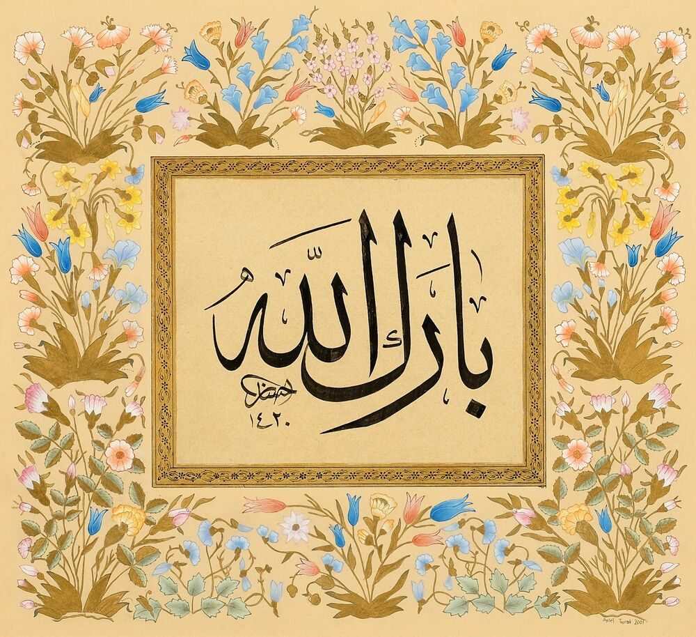
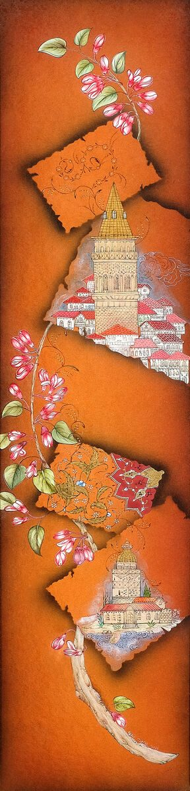
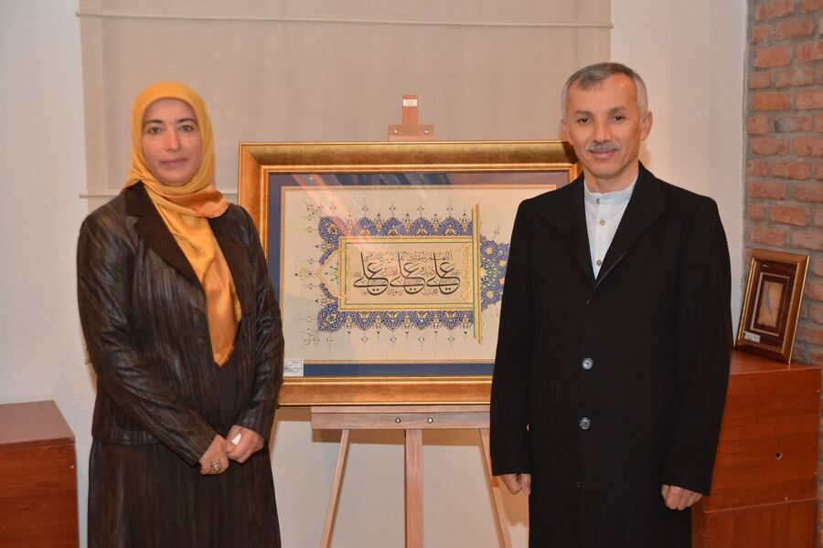
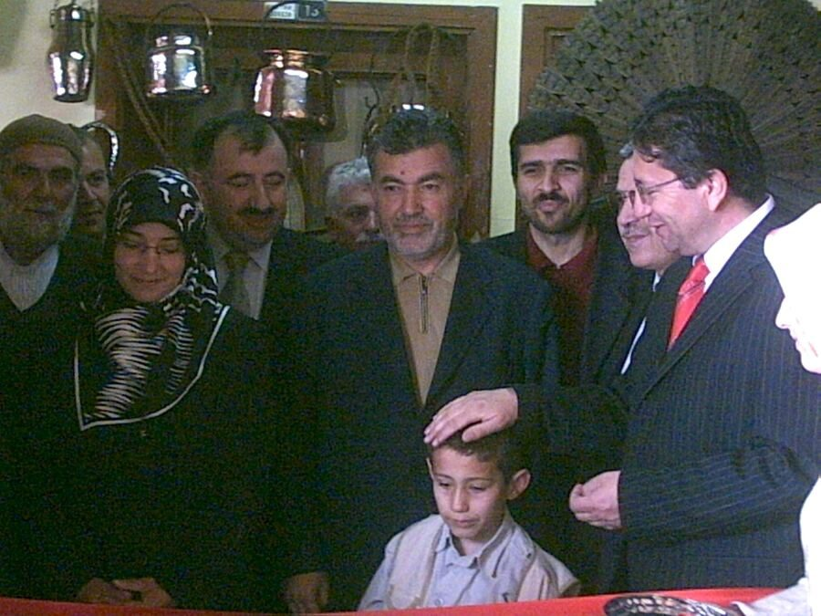
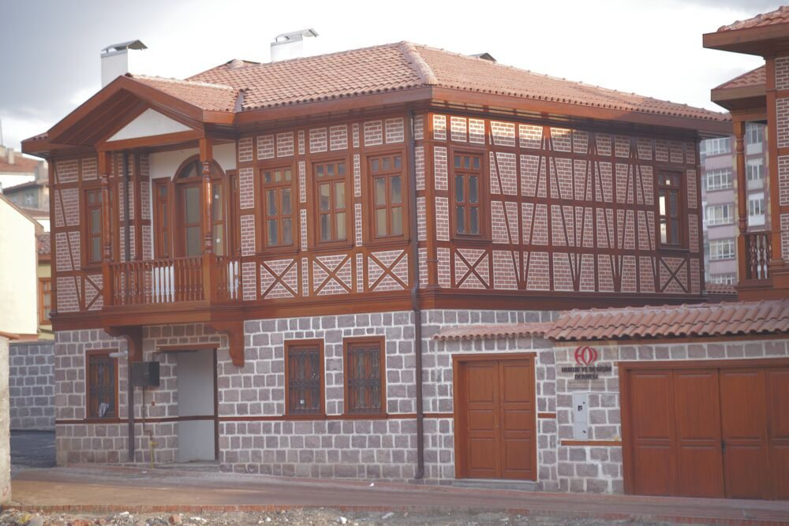

Tezhip
Tezhip
Yazıyı çerçeveleyen ve yücelten altın ve boya süslemeler: rumi, hatai ve bulut motifleri.
The art of gold on paper
Aysel Toprak 1999'dan bu yana tezhip sanatıyla uğraşıyor: el yazmalarını ve hat levhalarını altın ve elde hazırlanan boyalarla, geometrik ve bitkisel motiflerle süsleyen klasik Türk-İslam sanatı. Tezhibin yanı sıra çini, minyatür ve ebru da çalışmıştır.


Aysel Toprak 1966'da Ankara'da doğdu. 1982'de Dokuzuncu Akşam Sanat Okulundan mezun oldu. Tezhiple tanışıklığı eşi Mehmet Toprak vesilesi ile oldu. Kültür Bakanlığı'nda açılan Türk-İslam sanatları tezhip kurslarına katıldı ve Memnune Birkan'dan dersler aldı. Minyatür Sanatçısı merhum Ömer Faruk Atabek'in, kalemini beğenip tezhibe devam etmesini tavsiye etmesi, onun bu yoldaki motivasyonunu artırdı. Dönemin zor şartlarına rağmen tezhip eğitimini tamamladı ve 2001'de kurs bitirme başarı belgesini aldı.
Sonraki yıllarda Hikmet Türker'den çini (2010), Figen Kubatoğlu'ndan minyatür (2014–2016), Sevimbike Polat'tan da ebru (2024–2025) dersleri aldı; 2014–2018 yılları arasında Orhan Dağlı ile tezhip meşklerine devam etti. Bu sanatların hepsini severek icra eden Aysel Toprak; kendisini tamamlayan sanatın tezhip olduğunu söylemektedir. 2008'de Kültür ve Turizm Bakanlığı'nın jüri değerlendirmesiyle verdiği Türk Süsleme Sanatları Sanatkârı, somut olmayan kültürel miras taşıyıcısı sanatçı tanıtım kartını aldı.
İlk kişisel sergisini 2004'te Ankara Kalesi, Pirinç Han'da açtı. Eserleri o günden beri Mamak Kültür Merkezi, Resim ve Heykel Müzesi ve Ulucanlar Cezaevi Müzesi Sanat Sokağı'nda düzenlenen çeşitli sergilerde sanatseverlerle buluştu. Ayrıca; 2025'te İstanbul Zeytinburnu Uluslararası İslam Sanatları Sergisi ve ABD'de Newark, Delaware'deki Zakat Foundation'da sergilendi. Kadı İyâz'ın Şifâ-i Şerif kitabından seçilen metinlerin tezhiplendiği 2023 tarihli konulu sergi, en çok ilgi gören çalışmalarından biri oldu. Sanatçı Aysel Toprak şu anda Kur'ân-ı Kerim'deki peygamber duaları üzerine yeni bir sergi hazırlığı içerisindedir. Mart 2020'de Kuveyt'teki Badriya Nasser Al-Jeyan Camii tezyinatı için desenler çizdi ve kalem işi ekibini yönlendirdi.
2002'den bu yana Tezhip hocalığı yapan Aysel Toprak, İlim Kültür ve Sanat Vakfı (ILKSAV), Mamak Halk Eğitim Merkezi, Kültür ve Turizm Bakanlığı kursları, Gençlik ve Spor Bakanlığı ve Türkiye Diyanet Vakfı'na bağlı gençlik merkezlerinde dersler verdi. 2014'ten beri Ulucanlar Cezaevi Müzesi Sanat Sokağı'ndaki kendi sanat atölyesinde özel dersler veren Aysel Toprak; ayrıca Tennure Sanat Galerisi'nde de öğrenci yetiştirmektedir. Bu zamana kadar yetiştirdiği 400'ü aşkın öğrencisinin pek çoğu güzel sanatlar fakültelerinden başarı ile mezun olmuştur.
Her eser, beş yüzyılı aşkın süredir ustadan çırağa aktarılan yöntemlerle tamamen elde yapılır.

Yazıyı çerçeveleyen ve yücelten altın ve boya süslemeler: rumi, hatai ve bulut motifleri.
Kitreli su üzerine serpilen boyaların kâğıda alınması; her kâğıt tekrarı olmayan tek bir an.

Osmanlı minyatür geleneğinde ince fırça resmi: şehir manzaraları, çiçekler ve hikâyeler, mücevher gibi renklerle.
İznik geleneğinden ilham alan lale, karanfil ve saz yapraklarıyla elde boyanıp sırlanarak fırınlanan tabak ve karolar.
Özgün tezhip ve hilye çalışmaları. Büyütmek için bir esere dokunun.
Bu levhalardaki hat, usta hattatlara aittir; tezhip Aysel Toprak'a aittir.
Türkiye'de ve ABD'de kişisel, karma ve konulu sergiler.



2002'den beri 400'ü aşkın öğrenci. Güzel sanatlar fakültelerinden birçok öğrenci ders almış ve okullarını dereceyle bitirmişlerdir.
Birlikte çalıştığı sanatçılar: Orhan Dağlı (Müzehhip); hattatlar Abdulkadir Kaya, Fatih Çelik, Ali İhsan Sakal, Yusuf Şükrü Şafak, Muharrem Gökşen, Özgür Çetintaş, Erhan Bektaş, Ebru Koyuncu, vd.

Tezhip her zaman atölyede, yan yana oturularak öğretilmiştir. Aysel Toprak, bu sanatı yakından tanımak isteyenler için başlangıç ve ileri seviye atölye çalışmaları düzenler.
Eser edinme, sipariş, sergi teklifleri ve atölye davetleri için.
Aysel Toprak'ın özgün eserleri, siparişleri ve giclée baskıları Artista Noble aracılığıyla edinilebilir.
Sergi veya misafir sanatçı programıyla ilgilenen galeriler, müzeler ve üniversiteler.
ABD'de grup ve özel atölyeler, gösteriler ve sunumlar.